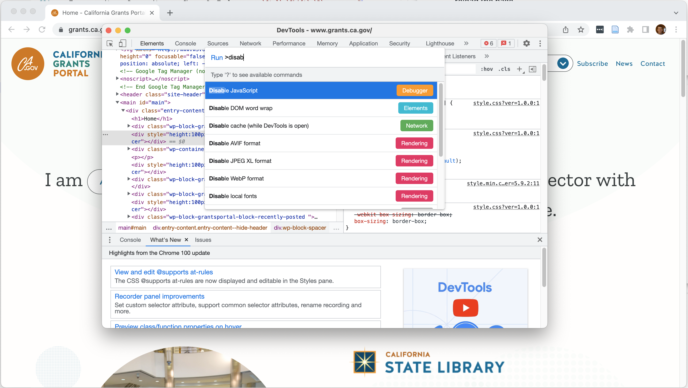

fredrtidycensusThis is me interacting directly with the en.wikipedia.org web server.
https://linc.osbm.nc.gov/api/explore/v2.1/catalog/datasets/2018-county-business-patterns/records?where=area_name%3D%22Orange%20County%22
https:// protocollinc.osbm.nc.gov host/api/explore/v2.1/catalog/datasets/2018-county-business-patterns/records path?where=area_name%3D%22Orange%20County%22 querywhere is the key and area_name="Orange County" is the value%20 is space, %22 is a double quote, %3D is equals
&, e.g. ?where=area_name%3D%22Orange%20County%22&select=populationAccept: header to tell the server what format to return the information inGET /datasets/2018-census HTTP/1.1
Accept: application/json{
"total_count": 2628,
"results": [
{
"area_name": "Orange County",
"area_type": "County",
"north_american_industry_classification_system_classification": "Office Furniture (including Fixtures) Manufacturing Industry Group",
"year": "2018",
"data_suppression_or_noise_flag": "Low Noise; Cell Value was Changed by Less than 2 Percent by the Application of Noise",
"variable": "Total Annual Payroll ($1000) with Noise",
"value": 5097
},
{
"area_name": "Orange County",
"area_type": "County",
"north_american_industry_classification_system_classification": "Machinery, Equipment, and Supplies Merchant Wholesalers Industry Group",
"year": "2018",
"data_suppression_or_noise_flag": "Low Noise; Cell Value was Changed by Less than 2 Percent by the Application of Noise",
"variable": "Total Annual Payroll ($1000) with Noise",
"value": 12683
}
]
}robots.txtrobots.txt file that specifies what pages automated scraping should avoidpolite for retrieving web pages while respecting robots.txtrvest and purrr for extracting data from web pageshttps://www.bing.com/search?q=unc&form=QBLH&sp=-1&pq=unc&sc=8-3&qs=n&sk=&cvid=54A0FE5E1C194FC4ACB88A232A9740F9
https://www.bing.com/search?q=unc&form=QBLH&sp=-1&pq=unc&sc=8-3&qs=n&sk=&cvid=54A0FE5E1C194FC4ACB88A232A9740F9
Protocol (HTTP or HTTPS)
https://www.bing.com/search?q=unc&form=QBLH&sp=-1&pq=unc&sc=8-3&qs=n&sk=&cvid=54A0FE5E1C194FC4ACB88A232A9740F9
Host
https://www.bing.com/search?q=unc&form=QBLH&sp=-1&pq=unc&sc=8-3&qs=n&sk=&cvid=54A0FE5E1C194FC4ACB88A232A9740F9
Path
https://www.bing.com/search?q=unc&form=QBLH&sp=-1&pq=unc&sc=8-3&qs=n&sk=&cvid=54A0FE5E1C194FC4ACB88A232A9740F9
Query string (can often delete much of it)
https://www.bing.com/search?q=unc
iddiv: represents a division of a web pagespan: represents a (smaller) division of a web pagea: links (anchors)h1–h6 - headingsp - paragraphtable, tr, td - a table, and rows and cells of the tablediv - any div tag #carolina - Element with id=carolina (should be 0 or 1) .carolina - Element with class=carolina (may be many) div.carolina - div element with class=carolina .carolina.chapelhill - Element with classes carolina and chapelhill
div.carolina a finds links that are inside a div with class carolina> finds elements that are direct children
div.carolina a finds links that are inside a div with class carolina and not inside another tag within the div:contains(word or phrase) selects elements that contain “word or phrase” .<span>Cost: $20.00</span>. matches any character[abc] is a character class matching a, b, or c? matches 0 or 1 of previous character/character class* matches 0 or more of previous+ matches 1 or more of previous\\ treats the next expression as a character rather than a metacharacter (\ in some regular expression - libraries)^ matches start of string$ matches end of string\\b matches a word boundary (space, tab, etc.)Within a character class, - [:digit:] matches any digit - [:whitespace:] matches whitespace - [:alpha:] matches alphabetic characters (A-Z, a-z, and locale-dependent characters like ñ) - [:upper:], [:lower:] matches upper/lower case letters - [:alnum:] matches alphanumeric - [:punct:] matches punctuation
Ctrl-Shift-P (Cmd-Shift-P on Mac)
Disabling JavaScript in Chrome DevTools
https://projects.indicatrix.org/odum-webscrape